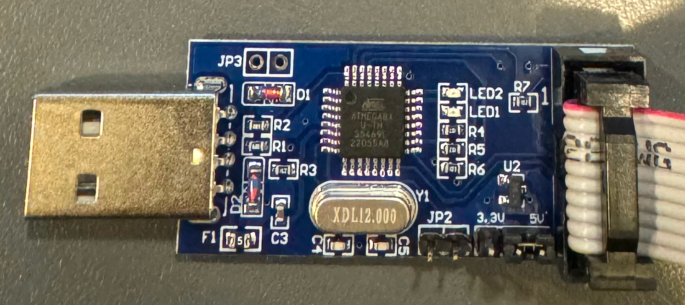

初期設定
前提
環境は、Ubuntu 22.04(実際はLubuntu)を使用。
プログラマ
Amazonで売っていたUSBASPを使用した。aitendoさんなら、500円で売っているけど、Amazonのやつはケーブルが同梱なのと送料無料なのでそちらにした。後で解説するけど、USBASP内のFirmwareが古い場合が多いので、2つ入手した方が良い。
環境のインストール
Ubuntu(debian系)だと、aptで全部インストールできる。
USBAPを差してlsusbを実行してみる。上記のUSBASPは以下のように表示された。
USBASPとの結線
ここに掲載されている。USBASPから電源が供給されるので、別途電源を用意する必要はない。
変換基板は秋月さんのこれを使った。ルーペで見て、○が書かれているところが1番pinでそこから反時計回りに2-6pinになる。仕様書の1. Pin Configurationsを参照。
結線テスト
書き込みツールにはavrdudeを使用。-tを付けるとterminal modeに入るので、これを使ってテストする。
avrdude: warning: cannot set sck period. please check for usbasp firmware update.
avrdude: error: program enable: target doesn't answer. 1
avrdude: initialization failed, rc=-1
Double check connections and try again, or use -F to override
this check.
avrdude done. Thank you.
firmwareが古いかもよというエラーになったので、やはりfirmwareを更新しないといけないようだ。
Note
私の環境では特にsudoを付けずにavrdudeを動かすことができた。もしもsudoを付けないとPermission Deniedになる場合は、udevで設定できる。
firmwareの更新
USBASPに、JP2という場所があったのでピンヘッダを半田付け。 
USBASP同士をつなぐ。コネクタに爪が付いているのに、差さる方向に差せば良い。写真で左側の方にショートピンが差してある。ショートピンが差してある側がFirmwareが書き込まれる側になる。

Firmwareを書く側(写真の右側。JP2にはショートピンを差さない)を、PCに接続する。 Firmwareを入手して展開。
usbasp.2011-05-28/bin/firmwareの下に移動して、avrdudeで書き込む。
cd usbasp.2011-05-28/bin/firmware
avrdude -P usb -c usbasp -p m8 -U flash:w:usbasp.atmega8.2011-05-28.hex
avrdude: warning: cannot set sck period. please check for usbasp firmware update.
avrdude: AVR device initialized and ready to accept instructions
Reading | ################################################## | 100% 0.00s
avrdude: Device signature = 0x1e9307 (probably m8)
avrdude: NOTE: "flash" memory has been specified, an erase cycle will be performed
To disable this feature, specify the -D option.
avrdude: erasing chip
avrdude: warning: cannot set sck period. please check for usbasp firmware update.
avrdude: reading input file "usbasp.atmega8.2011-05-28.hex"
avrdude: input file usbasp.atmega8.2011-05-28.hex auto detected as Intel Hex
avrdude: writing flash (4700 bytes):
Writing | ################################################## | 100% 3.01s
avrdude: 4700 bytes of flash written
avrdude: verifying flash memory against usbasp.atmega8.2011-05-28.hex:
avrdude: load data flash data from input file usbasp.atmega8.2011-05-28.hex:
avrdude: input file usbasp.atmega8.2011-05-28.hex auto detected as Intel Hex
avrdude: input file usbasp.atmega8.2011-05-28.hex contains 4700 bytes
avrdude: reading on-chip flash data:
Reading | ################################################## | 100% 2.44s
avrdude: verifying ...
avrdude: 4700 bytes of flash verified
avrdude: safemode: Fuses OK (E:FF, H:D9, L:9F)
avrdude done. Thank you.
Firmwareを書き込んだ方から、JP2のショートピンを外してこれをPCとATtiny10をつないで再度テストに挑戦。
avrdude: AVR device initialized and ready to accept instructions
Reading | ################################################## | 100% 0.01s
avrdude: Device signature = 0x1e9003 (probably t10)
OKになった。
Lチカで動作確認
IDEとか使わずにmakeだけでビルドできるのがあったので使ってみる。
avr-gcc -c -std=gnu99 -g -Os -Wall -DF_CPU=1000000 -mmcu=attiny10 -c src/main.c -o src/main.o
avr-gcc -mmcu=attiny10 -o demo.elf src/main.o
avr-size demo.elf
text data bss dec hex filename
70 0 0 70 46 demo.elf
avr-objcopy -O ihex demo.elf demo.hex
PIN4(PB2)にLEDをつなぐ。電流制限抵抗は330Ωにした。avrdudeで書き込む。
avrdude: AVR device initialized and ready to accept instructions
Reading | ################################################## | 100% 0.01s
avrdude: Device signature = 0x1e9003 (probably t10)
avrdude: NOTE: "flash" memory has been specified, an erase cycle will be performed
To disable this feature, specify the -D option.
avrdude: erasing chip
avrdude: reading input file "demo.hex"
avrdude: input file demo.hex auto detected as Intel Hex
avrdude: writing flash (70 bytes):
Writing | ################################################## | 100% 0.29s
avrdude: 70 bytes of flash written
avrdude: verifying flash memory against demo.hex:
avrdude: load data flash data from input file demo.hex:
avrdude: input file demo.hex auto detected as Intel Hex
avrdude: input file demo.hex contains 70 bytes
avrdude: reading on-chip flash data:
Reading | ################################################## | 100% 0.03s
avrdude: verifying ...
avrdude: 70 bytes of flash verified
avrdude done. Thank you.
LEDが0.5秒間隔で点滅する。
ATtiny10、書き込みも楽だしフルスペック(最適化on)のGCCが使えるし、良いね。